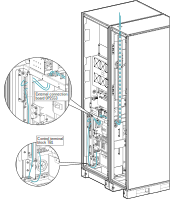

Route the Signal Cables in Top Entry Systems
Reality NAM UPS with transformer 25–50 kVA
-
Remove the breaker cover on the UPS cabinet.
Figure 2. Front View of the UPS Cabinet 
-
Route the signal cables through the top gland plate in
the top entry cabinet, into the cable channel, through the transformer
cabinet (if present), and into the UPS cabinet to the external connection
board 0P2553.
Figure 3. Front View of the UPS Cabinet and Top Entry Cabinet Figure 4. Front View of the UPS Cabinet, Transformer Cabinet, and Top Entry Cabinet